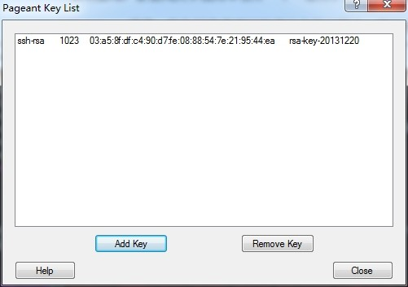

公司大部分同事都使用SecureCRT来远程访问服务器，我比较另类，用了个PuTTY。最近公司把访问服务器改成了需要使用SSH Keys来访问，而且还需要通过跳板机才可以。这样一来就需要使用agent forwarding。可问题来了，SecureCRT只需要选择允许agent forwarding就可以了。而putty在“Connection” -> “SSH” -> “Auth”下勾选了“Allow agent forwarding”后，依然无法访问。
谷歌了好久也没法找到问题所在，后来无奈，去看了下putty找了文档，找到了问题所在。原来还需要Pageant一起使用，步骤如下：
一、开启Pageant，（可以在putty官网下载到），Windows下开始后会自动最小化在托盘，找到后双击打开即可。

二、添加Key，在Pageant界面点击Add Key，选择密钥即可。
三、启动PuTTY，在“Connection” -> “SSH” -> “Auth”下勾选了“Allow agent forwarding”。
接下去就可以连接跳板机，然后通过跳板机访问服务器啦。
PuTTY在这边不是一款很大众的软件，使用起来遇到问题自然比较难找到办法解决，而且他的文档还都是英文。所以把这些记下来，方便自己以后忘记了后还能再找到，也方便其他和我一样的人。